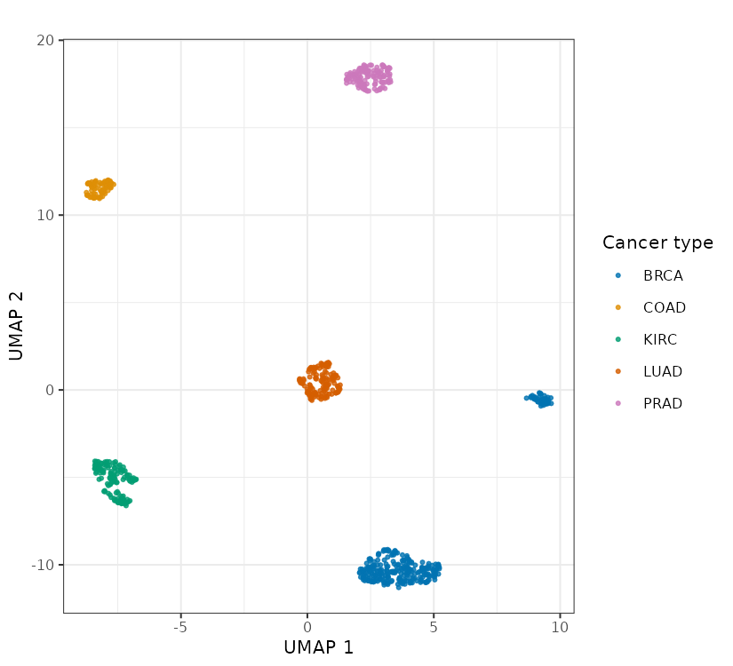
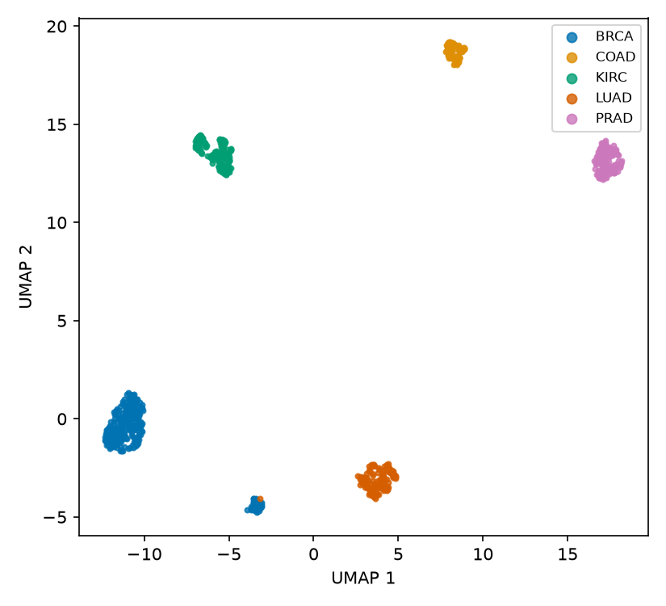
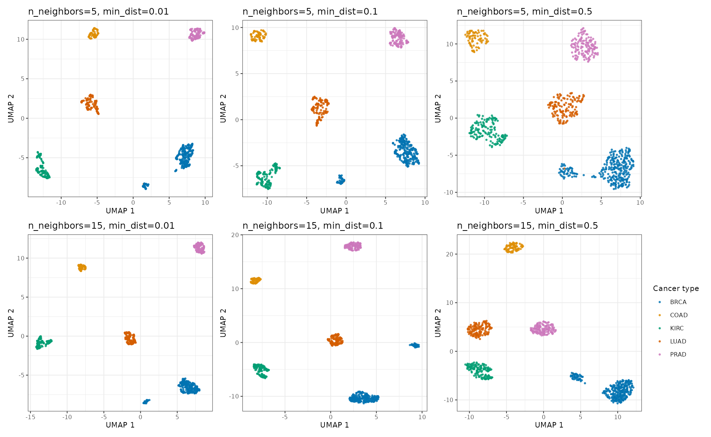
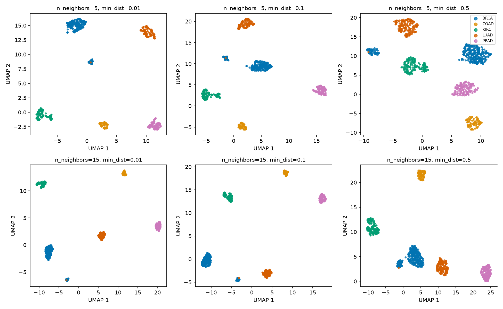
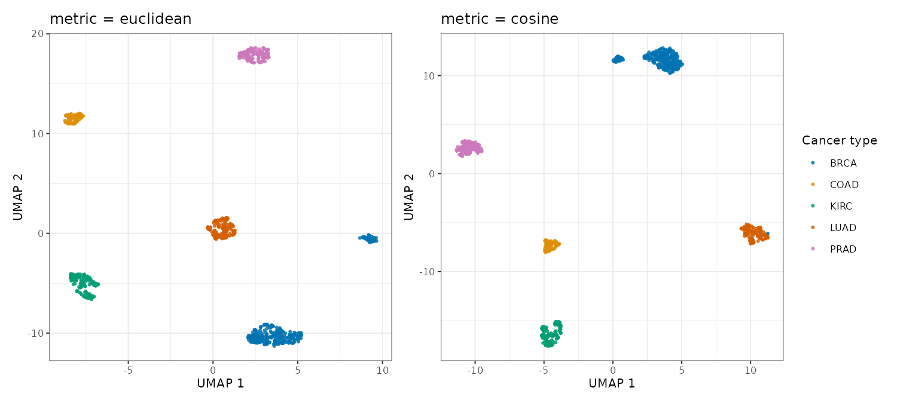
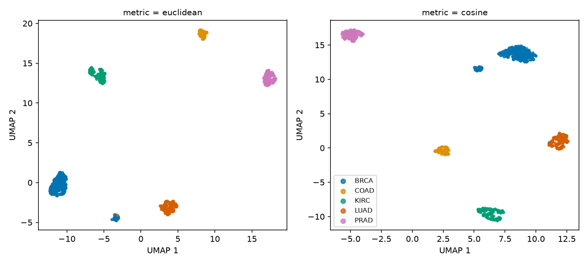
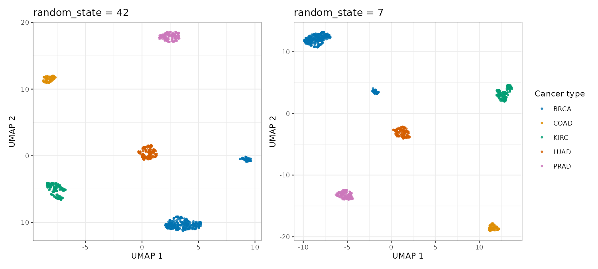
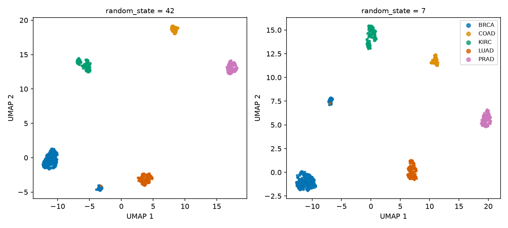

4 UMAP exercises
4.1 Data and setup
The dataset contains RNA-seq measurements for 801 tumor samples from five cancer types: breast (BRCA), kidney (KIRC), colon (COAD), lung (LUAD) and prostate (PRAD). It is derived from the TCGA Pan-Cancer dataset distributed through the UCI Machine Learning Repository.
The supplied file contains log2-transformed expression values for the 1,000 genes with the largest variance across samples.
library(uwot)
library(ggplot2)
library(patchwork)
df <- read.csv("data/tcga_pancan_top1000.csv", row.names = 1)
X <- as.matrix(df[, setdiff(colnames(df), "cancer_type")])
y <- factor(df$cancer_type)
dim(X)[1] 801 1000import matplotlib.pyplot as plt
import pandas as pd
from umap import UMAP
df = pd.read_csv("data/tcga_pancan_top1000.csv", index_col=0)
X = df.drop(columns="cancer_type").to_numpy()
y = df["cancer_type"].to_numpy()
X.shape(801, 1000)The labels are not passed to UMAP. We use them only after fitting to assess how the embedding relates to the known cancer types.
This helper keeps the plotting code short:
cancer_colors <- c(
BRCA = "#0173b2", COAD = "#de8f05", KIRC = "#029e73",
LUAD = "#d55e00", PRAD = "#cc78bc"
)
embedding_plot <- function(embedding, y, title = "") {
df <- data.frame(
UMAP1 = embedding[, 1],
UMAP2 = embedding[, 2],
cancer_type = y
)
ggplot(df, aes(UMAP1, UMAP2, color = cancer_type)) +
geom_point(size = 0.8, alpha = 0.8) +
scale_color_manual(values = cancer_colors) +
labs(
x = "UMAP 1", y = "UMAP 2",
title = title, color = "Cancer type"
)
}cancer_colors = {
"BRCA": "#0173b2",
"COAD": "#de8f05",
"KIRC": "#029e73",
"LUAD": "#d55e00",
"PRAD": "#cc78bc",
}
def plot_embedding(ax, embedding, labels, title=None):
for cancer_type in sorted(set(labels)):
mask = labels == cancer_type
ax.scatter(
embedding[mask, 0], embedding[mask, 1],
c=cancer_colors[cancer_type], s=8, label=cancer_type
)
ax.set_xlabel("UMAP 1")
ax.set_ylabel("UMAP 2")
if title:
ax.set_title(title)4.2 Exercise 1: Fit and inspect a baseline embedding
Fit UMAP with n_neighbors = 15, min_dist = 0.1, Euclidean distance and a fixed random seed (random_state = 42 in Python, set.seed(42) in R). Plot the result and color it by cancer_type.
Before opening the solution, note which conclusions come from the embedding itself and which require the known labels.
set.seed(42)
embedding <- umap(
X, n_neighbors = 15, min_dist = 0.1,
metric = "euclidean"
)
embedding_plot(embedding, y)
reducer = UMAP(
n_neighbors=15,
min_dist=0.1,
metric="euclidean",
random_state=42,
)
embedding = reducer.fit_transform(X)
fig, ax = plt.subplots(figsize=(5.5, 5))
plot_embedding(ax, embedding, y)
ax.legend()
Most samples occupy five label-homogeneous regions, so cancer type is strongly associated with the neighborhood structure in this filtered dataset. In this run, a detached island contains 48 BRCA-labeled samples and one LUAD-labeled sample. The plot alone cannot tell us whether those samples represent a biological subtype, a technical effect, unusual samples or a labeling issue. That would require checking sample metadata, quality-control measures and the original expression profiles.
4.3 Exercise 2: Test parameter sensitivity
Fit all six combinations of n_neighbors in {5, 15} and min_dist in {0.01, 0.1, 0.5}. Use the same seed and Euclidean distance for every fit.
Compare the label-level pattern, the compactness of each region and the secondary, mostly BRCA island. Which observations persist across the grid, and which depend on a particular setting?
nn_values <- c(5, 15)
md_values <- c(0.01, 0.1, 0.5)
plots <- list()
for (nn in nn_values) {
for (mind in md_values) {
set.seed(42)
embedding <- umap(
X, n_neighbors = nn, min_dist = mind,
metric = "euclidean"
)
plots[[paste(nn, mind)]] <- embedding_plot(
embedding, y,
title = paste0("n_neighbors=", nn, ", min_dist=", mind)
)
}
}
wrap_plots(plots, nrow = 2, ncol = 3)
n_neighbors and min_dist.
nn_values = [5, 15]
min_dist_values = [0.01, 0.1, 0.5]
fig, axes = plt.subplots(2, 3, figsize=(13, 8))
for row, nn in enumerate(nn_values):
for col, mind in enumerate(min_dist_values):
embedding = UMAP(
n_neighbors=nn,
min_dist=mind,
metric="euclidean",
random_state=42,
).fit_transform(X)
plot_embedding(
axes[row, col], embedding, y,
title=f"n_neighbors={nn}, min_dist={mind}",
)
axes[0, -1].legend()
fig.tight_layout()
n_neighbors and min_dist.
The five main label groups are visible throughout the grid. Their shapes, density, orientation and relative positions change, and the gap around the secondary island varies. The stable label-level separation is better supported than any claim based on the exact layout of one panel. The grid does not identify an optimal setting; it shows which visual features are sensitive to the settings.
4.4 Exercise 3: Compare distance metrics
Using the baseline values for n_neighbors, min_dist and the random seed, compare Euclidean and cosine distance. Explain what each metric treats as similar before interpreting the plots.
metrics <- c("euclidean", "cosine")
plots <- lapply(metrics, function(m) {
set.seed(42)
embedding <- umap(X, n_neighbors = 15, min_dist = 0.1, metric = m)
embedding_plot(embedding, y, title = paste0("metric = ", m))
})
wrap_plots(plots, nrow = 1)
fig, axes = plt.subplots(1, 2, figsize=(10, 4.5))
for ax, metric in zip(axes, ["euclidean", "cosine"]):
embedding = UMAP(
n_neighbors=15,
min_dist=0.1,
metric=metric,
random_state=42,
).fit_transform(X)
plot_embedding(ax, embedding, y, title=f"metric = {metric}")
axes[-1].legend()
fig.tight_layout()
Euclidean distance measures absolute coordinate differences between expression vectors. Cosine distance compares their direction and is unchanged if a whole vector is multiplied by a positive constant. Both metrics produce five mostly label-homogeneous regions for this dataset, although the layouts differ. Agreement on that broad pattern is useful as a sensitivity check, but it does not prove that either metric is biologically correct or rule out technical effects. Metric choice should still follow the preprocessing and the scientific meaning of the measurements.
4.5 Exercise 4: Check stability across seeds
Repeat the baseline fit with two different random seeds (random_state/set.seed values of 42 and 7). Decide what remains stable and what should not be compared across the two runs.
seeds <- c(42, 7)
plots <- lapply(seeds, function(s) {
set.seed(s)
embedding <- umap(
X, n_neighbors = 15, min_dist = 0.1,
metric = "euclidean"
)
embedding_plot(embedding, y, title = paste0("seed = ", s))
})
wrap_plots(plots, nrow = 1)
fig, axes = plt.subplots(1, 2, figsize=(10, 4.5))
for ax, seed in zip(axes, [42, 7]):
embedding = UMAP(
n_neighbors=15,
min_dist=0.1,
metric="euclidean",
random_state=seed,
).fit_transform(X)
plot_embedding(ax, embedding, y, title=f"random_state = {seed}")
axes[-1].legend()
fig.tight_layout()
The label-level grouping and the secondary island appear in both runs, while the orientation and placement of the regions change. UMAP1 and UMAP2 have no fixed meaning, so coordinates from separate fits should not be compared directly. Repeating the fit can reveal whether a visual feature is stable, but stability alone does not establish its biological interpretation.